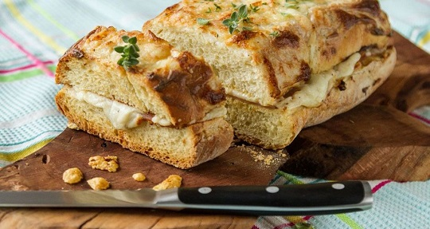
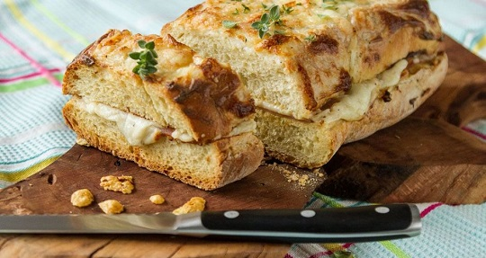
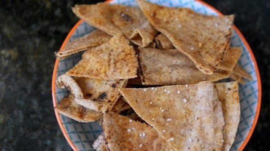
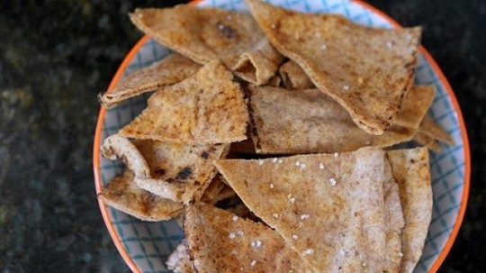
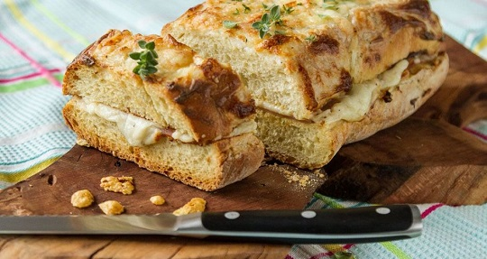
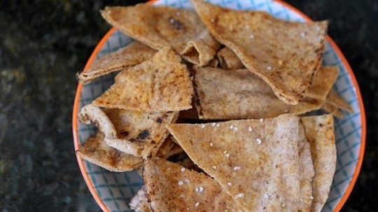

 


Καλώς ήρθατε στην ιστοσελίδα μας. Σε αυτή την ιστοσελίδα μπορούν βρουν ιδέες, από τον μέσο φοιτητή που θέλει κάτι εύκολο και απλό να μαγειρέψει για να φάει ,μέχρι κάποιον τολμηρό λάτρη της γαστρονομίας ο οποίος ψάχνει μια ρηξικέλεφχθη ιδέα που θα του διευρύνει τους γευστικούς του ορίζοντες. Η συγγραφική μας ομάδα αναζήτησε συνταγές και συγκρότησε αυτό τον βοηθητικό οδηγό ο οποίος θα αρχίσει να κάνει τον καθένα να αναρωτιέται από το πόσο απλή και εύκολη μπορεί να είναι μία ιδέα έως το πόσο μπορείς να ταράξεις όλα τα δεδομένα της καθημερινής σου ζωής.

